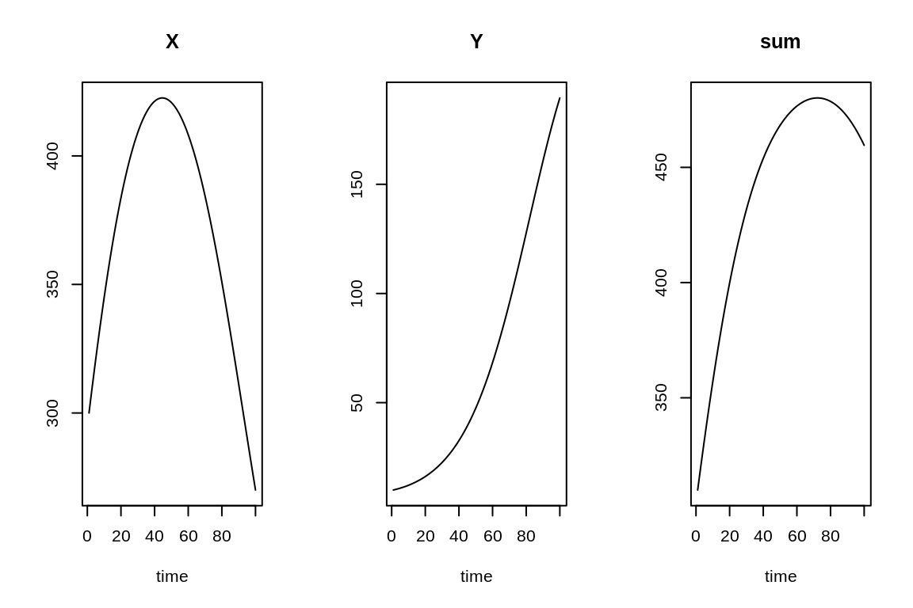
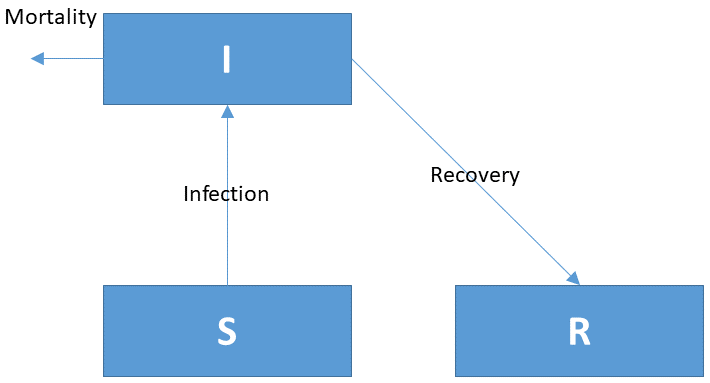

Tutorial
You are advised to first watch the following video. It briefly explains how to implement a simple COVID model in R.
Simple R model: Lotka-Volterra dynamics
The following R-code implements the Lotka-Volterra model. This model describes a predator-prey type of ecological interactions. The dynamics of the prey (\(X\)) and predators (\(Y\)) are described by these two coupled differential equations:
\[ \frac{{dX}}{{dt}} = a \cdot X \cdot \left( 1 - \frac{X}{K}\right) - b \cdot X \cdot Y\] \[ \frac{{dY}}{{dt}} = g \cdot b \cdot X \cdot Y - e \cdot Y\]
- The initial values are: X = 300, Y = 10
- The parameter values are: a = 0.05, K = 500, b = 0.0002, g = 0.8, e = 0.03
- The model is run for 100 days, with an output shown every day.
require(deSolve) # package with solution methods
state.ini <- c(X=300, Y=10) # state variable initial conditions
parms <- c(a=0.05, K=500, b=0.0002, g=0.8, e=0.03) # parameter values
LVmodel <- function(t, state, parameters) {
with (as.list(c(state, parameters)), {
# process rates
Growth.X <- a*X*(1-X/K)
Grazing.Y <- b*X*Y
Mortality.Y <- e*Y
# time derivative
dX.dt <- Growth.X - Grazing.Y
dY.dt <- g*Grazing.Y - Mortality.Y
return (list(c(dX.dt, dY.dt), # vector of derivatives
sum = X+Y)) # output variable
})
}
times <- 1:100
out <- ode(y = state.ini, func = LVmodel, times = times, parms = parms)
plot(out, mfrow = c(1,3))
TASK 1
Run the model with other initial values (X = 200, Y = 50). Store the output in a variable out2. Plot the two runs simultaneously in one graph.
Tip: plot(out, out2) will plot all variables at once for both runs.
## run model with new initial values, and plot both runs at oncestate.ini2 <- # type new initial conditions
out2 <- # run the model, with the new initial conditions
plot(out, out2, mfrow = c(1,3)) # plot both runs at oncestate.ini2 <- c(X = 200, Y = 50)
out2 <- ode(y = state.ini2, func = LVmodel, times = times, parms = parms)
plot(out, out2, mfrow = c(1,3))TASK 2
Run the model over 1000 days, using the same initial conditions as before, and plot the two runs simultaneously in one graph.
- Run 1: X = 300, Y = 10, store as out
- Run 2: X = 200, Y = 50, store as out2.
## run model with new initial values, and plot both runs at oncestate.ini <-
state.ini2 <-
times2 <-
out <-
out2 <-
plot(out, out2, mfrow = c(1,3))state.ini <- c(X = 300, Y = 10)
state.ini2 <- c(X = 200, Y = 50)
times2 <- 1:1000
out <- ode(y = state.ini, func = LVmodel, times = times2, parms = parms)
out2 <- ode(y = state.ini2, func = LVmodel, times = times2, parms = parms)
plot(out, out2, mfrow = c(1,3))Adding a state variable
Now enhance the Lotka-Volterra model by adding an extra state variable Z. This new state variable will represent a new predator that competes for prey with the predator Y. The extra input you will need is as follows:
- Initial conditions for Z are the same as for Y.
- The grazing of Z on X is described by a parameter bz = 0.0001.
- The mortality of Z is described by a parameter ez = 0.01.
- The biomass yield is the same for both Y and Z (g = 0.8).
You can use the 2-state-variable LV model to start with.
## Extend the current model with state variable Z (similar dynamics as Y)
state.ini <- c(X=300, Y=10)
parms <- c(a=0.05, K=500, b=0.0002, g=0.8, e=0.03)
LVmodel <- function(t, state, parameters) {
with (as.list(c(state, parameters)), {
# process rates
Growth.X <- a*X*(1-X/K)
Grazing.Y <- b*X*Y
Mortality.Y <- e*Y
# time derivative
dX.dt <- Growth.X - Grazing.Y
dY.dt <- g*Grazing.Y - Mortality.Y
return (list(c(dX.dt, dY.dt), # vector of derivatives
sum = X+Y)) # output variable
})
}
times <- 1:1000
out <- ode(y = state.ini, func = LVmodel, times = times, parms = parms)
plot(out, mfrow=c(2,2))state.ini <- c(X = 300, Y = 10, Z = 10)
parms <- c(a = 0.05, K = 500, b = 0.0002, g = 0.8, e = 0.03, bz = 0.0001, ez = 0.01)
LVmodel3 <- function(t, state, parameters) {
with (as.list(c(state, parameters)), {
# process rates
Growth.X <- a*X*(1-X/K)
Grazing.Y <- b*X*Y
Grazing.Z <- bz*X*Z
Mortality.Y <- e*Y
Mortality.Z <- ez*Z
# time derivative
dX.dt <- Growth.X - Grazing.Y - Grazing.Z
dY.dt <- g*Grazing.Y - Mortality.Y
dZ.dt <- g*Grazing.Z - Mortality.Z
return (list(c(dX.dt, dY.dt, dZ.dt), sum = X+Y+Z))
})
}
times <- 1:1000
out <- ode(y = state.ini, func = LVmodel3, times = times, parms = parms)
plot(out, mfrow=c(2,2))SIR model
The models used to investigate the spread of infectious diseases are called SIR models. They describe the number of Susceptible, Infected and Recovered individuals in a population. Susceptible individuals are vulnerable to get the disease but are not (yet) infected. Infected individuals can recover, but some will die from the disease. Recovered individuals, at least in the first approximation, can no longer become infected.
The conceptual diagram of a SIR model is shown in the following figure:

The corresponding differential equations are as follows:
\[\frac{dS}{dt} = -InfectionRate\\ \frac{dI}{dt} = InfectionRate - RecoveryRate - MortalityRate\\ \frac{dR}{dt} = RecoveryRate\] where
\[ InfectionRate = b \cdot I \cdot S\\ RecoveryRate = g \cdot I\\ MortalityRate = m \cdot I \]
The parameter values are provided in the following table:
| Name | Value | Description | Unit |
|---|---|---|---|
| b | 0.00000002 | infection parameter | \(ind^{-1}~d^{-1}\) |
| g | 0.07 | recovery parameter | \(d^{-1}\) |
| m | 0.007 | mortality parameter | \(d^{-1}\) |
TASK
Below is the skeleton of a SIR model. Expand it to describe the pandemic. Run the model for 365 days.
Apply the model to the Belgian situation. You can start the simulation assuming that all Belgian people are susceptible to the disease, and that the spreading of the disease starts with 1000 infected individuals that return from holidays. There are 11.5 million Belgians. Also calculate the total population.
require(deSolve)
state.ini <- c(S = , I = , R = , Deceased = ) # state variable initial conditions
parms <- c(b = , g = , m = ) # parameters
SIRmodel <- function(t, state, parameters) {
with (as.list(c(state, parameters)), {
return (list(c(dS.dt, dI.dt, dR.dt, dDeceased.dt),
Population = ))
})
}
times <- 1:365
out <- ode(y = state.ini, func = SIRmodel, times = times, parms = parms)
plot(out)SIRmodel <- function(t, state, parameters) {
with (as.list(c(state, parameters)), {
InfectionRate <- b*I*S
RecoveryRate <-
MortalityRate <-
dS.dt <- -InfectionRate
dI.dt <-
dR.dt <-
dDeceased.dt <-
return (list(c(dS.dt, dI.dt, dR.dt, dDeceased.dt), # derivative vector
Population = S+I+R))
})
}state.ini <- c(S = 11500000-1000, I = 1000, R = 0, Deceased = 0)
parms <- c(
b = 0.00000002, # [1/ind/d], infection parameter
g = 0.07, # [1/d], recovery rate of infected individuals
m = 0.007 # [1/d], mortality rate of infected individuals
)
SIRmodel <- function(t, state, parameters) {
with (as.list(c(state, parameters)), {
InfectionRate <- b*S*I
RecoveryRate <- g*I
MortalityRate <- m*I
dS.dt <- -InfectionRate
dI.dt <- InfectionRate - RecoveryRate - MortalityRate
dR.dt <- RecoveryRate
dDeceased.dt <- MortalityRate
return (list(c(dS.dt, dI.dt, dR.dt, dDeceased.dt), # the time derivatives
Population = S+I+R)) # extra output variable
})
}
time.seq <- seq(from=0, to=365, by=1) # time sequence, in days
out <- ode(y=state.ini, times=time.seq, func=SIRmodel, parms=parms)
plot(out, las=1, col=1:2, lty=1)Finally
References
R Core Team (2020). R: A language and environment for statistical computing. R Foundation for Statistical Computing, Vienna, Austria. https://www.R-project.org/.
Karline Soetaert, Thomas Petzoldt, R. Woodrow Setzer (2010). Solving Differential Equations in R: Package deSolve. Journal of Statistical Software, 33(9), 1–25. DOI: 10.18637/jss.v033.i09. http://www.jstatsoft.org/v33/i09/
Karline Soetaert, Peter M.J. Herman (2009). A Practical Guide to Ecological Modelling. Springer Netherlands. DOI: 10.1007/978-1-4020-8624-3.